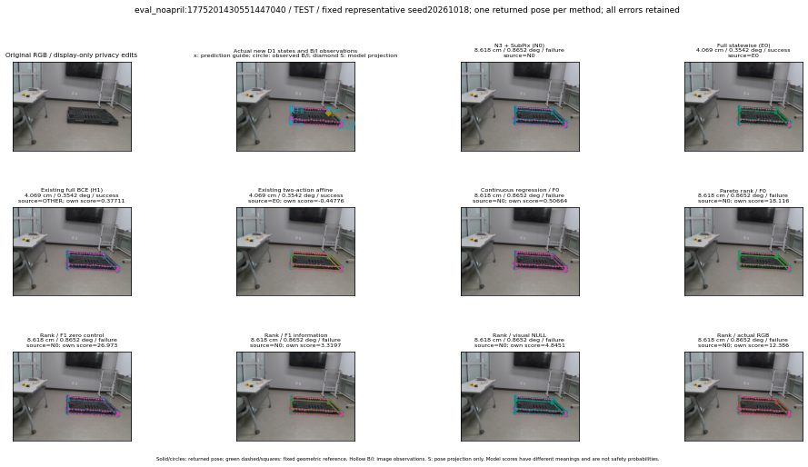

실선은 반환 자세, 초록 점선은 고정 기하 참조입니다. S는 영상 관측이 아닙니다. 점수는 모델별 의미가 다르며 보정된 안전 확률이 아닙니다. 개인정보 처리는 표시 사본에만 적용했습니다.
| 방법·seed | 위치 / 회전 / 공동성공 | 실제 출처 | 선택 후보 | 각 모델 자체 점수 |
|---|---|---|---|---|
| N0 | 8.618 cm / 0.8652 deg / failure | N0 | N/A | N/A |
| E0 | 4.069 cm / 0.3542 deg / success | E0 | N/A | N/A |
| E0_REGENERATED | 4.069 cm / 0.3542 deg / success | E0 | E0_REGENERATED | N/A |
| POSEFIX_SUBPIX_PF_ANCHOR | 11.13 cm / 1.304 deg / failure | OTHER | N/A | N/A |
| POSEFIX_SUBPIX_YOLO_ANCHOR | 11.13 cm / 1.304 deg / failure | OTHER | N/A | N/A |
| D1_H1_MLP_s20261018 | 4.069 cm / 0.3542 deg / success | OTHER | G13/ORIGINAL_WD/endpoint/65 | 0.37711483240127563 |
| D1_H1_MLP_s20261019 | 4.069 cm / 0.3542 deg / success | OTHER | G13/ORIGINAL_WD/endpoint/65 | 0.024217654019594193 |
| D1_H1_MLP_s20261020 | 4.069 cm / 0.3542 deg / success | OTHER | G13/ORIGINAL_WD/endpoint/65 | 0.07611478120088577 |
| D1_H1_PAIR_MLP_s20261018 | 4.069 cm / 0.3542 deg / success | E0 | E0_REGENERATED | -1.0904200077056885 |
| D1_H1_PAIR_MLP_s20261019 | 8.618 cm / 0.8652 deg / failure | N0 | N0 | -0.7064277529716492 |
| D1_H1_PAIR_MLP_s20261020 | 8.618 cm / 0.8652 deg / failure | N0 | N0 | -0.22810420393943787 |
| D1_H1_PAIR_ROLE_AFFINE_s20261018 | 4.069 cm / 0.3542 deg / success | E0 | E0_REGENERATED | -0.4477556645870209 |
| D1_H1_PAIR_ROLE_AFFINE_s20261019 | 4.069 cm / 0.3542 deg / success | E0 | E0_REGENERATED | -0.4275175631046295 |
| D1_H1_PAIR_ROLE_AFFINE_s20261020 | 4.069 cm / 0.3542 deg / success | E0 | E0_REGENERATED | -0.3845418393611908 |
| R_CONT_F0_s20261018 | 8.618 cm / 0.8652 deg / failure | N0 | N0 | 0.5066365599632263 |
| R_CONT_F0_s20261019 | 4.069 cm / 0.3542 deg / success | OTHER | G13/ORIGINAL_WD/endpoint/65 | 0.5518612861633301 |
| R_CONT_F0_s20261020 | 7.117 cm / 0.5907 deg / failure | OTHER | G10/ORIGINAL_WD/selected | 0.5814945101737976 |
| R_ORDER_F0_s20261018 | 8.618 cm / 0.8652 deg / failure | N0 | N0 | 18.116111755371094 |
| R_ORDER_F0_s20261019 | 8.618 cm / 0.8652 deg / failure | N0 | N0 | 15.636985778808594 |
| R_ORDER_F0_s20261020 | 8.618 cm / 0.8652 deg / failure | N0 | N0 | -1.9259766340255737 |
| R_ORDER_F1_ZERO_s20261018 | 8.618 cm / 0.8652 deg / failure | N0 | N0 | 26.973262786865234 |
| R_ORDER_F1_ZERO_s20261019 | 7.117 cm / 0.5907 deg / failure | OTHER | G10/ORIGINAL_WD/selected | 30.379953384399414 |
| R_ORDER_F1_ZERO_s20261020 | 8.618 cm / 0.8652 deg / failure | N0 | N0 | 15.548290252685547 |
| R_ORDER_F1_s20261018 | 8.618 cm / 0.8652 deg / failure | N0 | N0 | 3.319700241088867 |
| R_ORDER_F1_s20261019 | 8.618 cm / 0.8652 deg / failure | N0 | N0 | 9.583979606628418 |
| R_ORDER_F1_s20261020 | 8.618 cm / 0.8652 deg / failure | N0 | N0 | 3.0275001525878906 |
| V_ORDER_NULL_s20261018 | 8.618 cm / 0.8652 deg / failure | N0 | N0 | 4.8451361656188965 |
| V_ORDER_NULL_s20261019 | 8.618 cm / 0.8652 deg / failure | N0 | N0 | 4.225927352905273 |
| V_ORDER_NULL_s20261020 | 8.618 cm / 0.8652 deg / failure | N0 | N0 | 7.787984848022461 |
| V_ORDER_RGB_s20261018 | 8.618 cm / 0.8652 deg / failure | N0 | N0 | 12.386362075805664 |
| V_ORDER_RGB_s20261019 | 8.618 cm / 0.8652 deg / failure | N0 | N0 | 4.278318405151367 |
| V_ORDER_RGB_s20261020 | 8.618 cm / 0.8652 deg / failure | N0 | N0 | -8.178657531738281 |